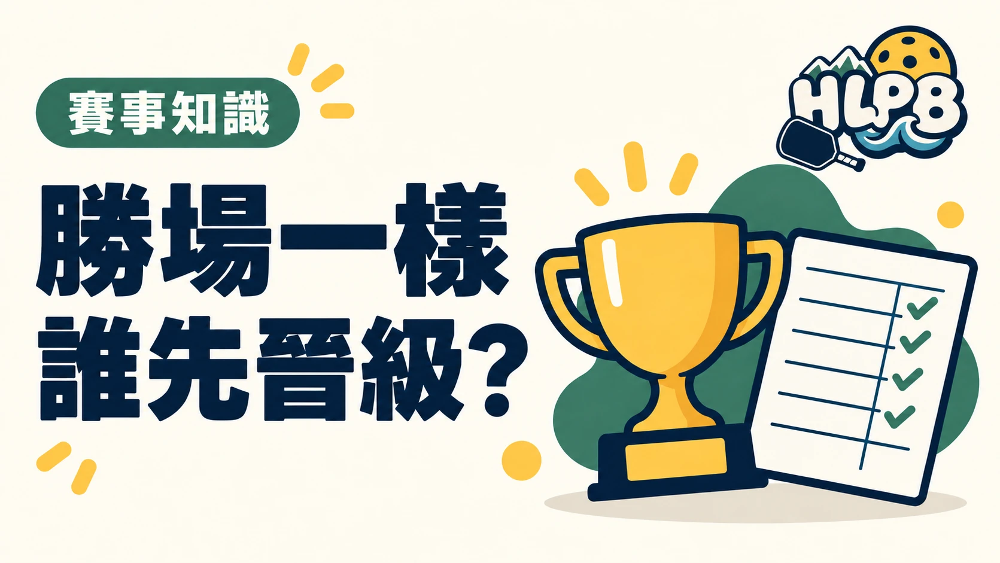

循環賽勝場相同，不是直接挑總得分最高的隊伍晉級。排名要依採用的規則按順序比較；對戰結果、得失分差與總得分，是不同的資料。
2026 USA Pickleball 的比較順序
| 順序 | 比較內容 |
|---|---|
| 第一項 | 並列隊伍彼此的對戰成績 |
| 第二項 | 全部比賽的得失分差 |
| 第三項 | 並列隊伍彼此的得失分差 |
| 第四項 | 對下一個較高勝場隊伍的得失分差 |
| 第五項 | 循環賽全部比賽的總得分 |
以上是第 15.B.4 節的破同分順序。跨組人數不相同時，其中部分比較方式不適用；退賽、棄權等成績也另有處理規定。因此，不能只拿一張局部成績截圖自行重排名次。
得失分差，為什麼不是總得分？
得失分差是得分減去失分，反映兩者的差距；總得分只累計得了多少分。若章程要求比較得失分差，就不能改用總得分替代，也不能任意跳過前面的對戰成績。
花蓮賽事應怎麼核對？
先找當場章程的排名條款，再確認比分是否齊全、哪些隊伍並列，以及採用哪一步解除並列。HLPB 建議有疑問時請大會指出實際套用的條款與計算範圍，比只問為何沒晉級更容易核對。
延伸閱讀：第一次參加花蓮匹克球比賽，循環賽與淘汰賽差在哪？、花蓮匹克球比賽，為什麼不能只看一般規則？。
資料來源：USA Pickleball 2026 規則書。
內容更新：2026-10-20｜資料來源：USA Pickleball 官方資料
返回文章列表